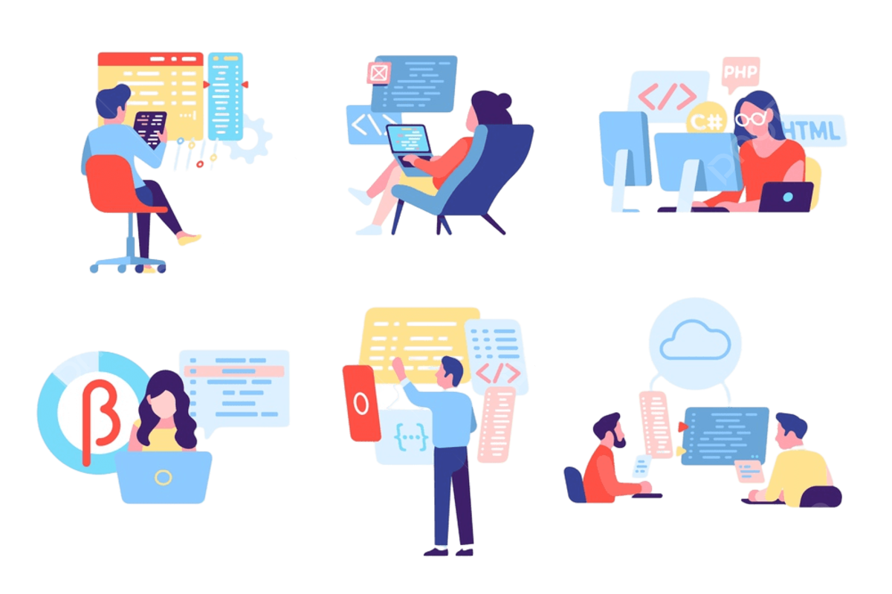
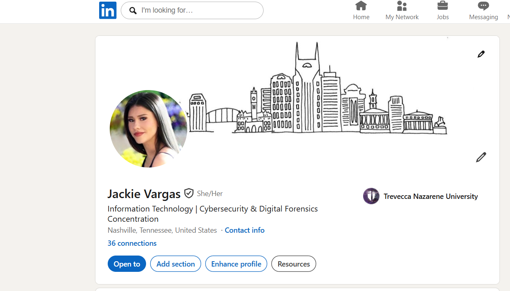
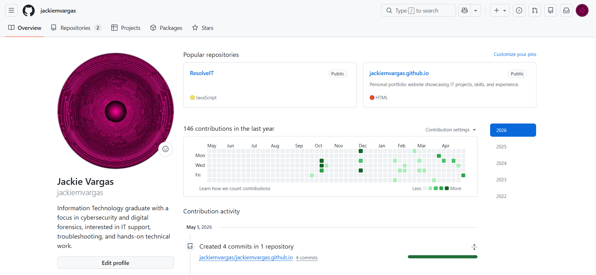
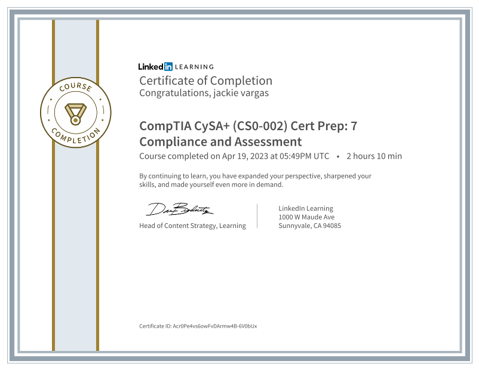
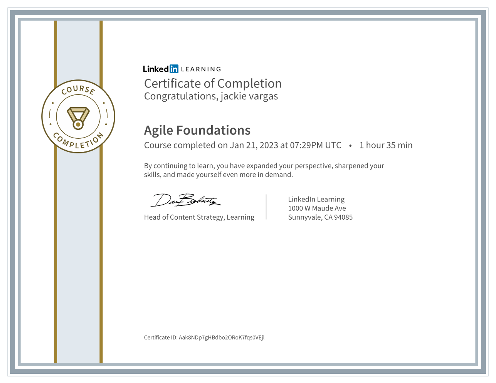

Get to Know Me
I am a recent Information Technology graduate from Trevecca Nazarene University with a concentration in Cybersecurity and Digital Forensics. Through my coursework and projects, I have built a foundation in troubleshooting, system security, digital forensics, databases, hardware fundamentals, and basic programming. I enjoy learning how technology works behind the scenes and using practical problem-solving to support users. I am also bilingual in English and Spanish, which helps me communicate clearly with different people. I am currently seeking an internship or entry-level IT opportunity where I can continue growing my hands-on technical experience.
Projects
Design Meets Technology
I enjoy combining creativity with technical skills to build user-friendly, visually engaging experiences. Through projects like my IT Help Desk Dashboard, I have focused on organizing workflows and creating interfaces that are easy to navigate and understand. I like building solutions that are both practical and visually clear while continuing to grow my skills in systems, design, and troubleshooting.

Resume
My resume highlights my academic background, technical skills, certifications, projects, and professional experience. It reflects both my coursework and the hands-on problem-solving, communication, and adaptability I have developed through school and work.
View Resume
My LinkedIn profile highlights my education, certifications, technical skills, and portfolio projects in a professional format.
Open LinkedInGitHub
You can explore my projects, including my IT Help Desk Dashboard, and follow my continued growth in coding and technical skills.
View My GitHubWhat I’m Building
Through my coursework, projects, and hands-on experiences, I have grown in confidence with troubleshooting, problem-solving, and understanding how systems function in real-world environments. My projects have helped me build skills across interface design, technical thinking, analytics, and hands-on work, while my academic and personal responsibilities have strengthened my communication, patience, and adaptability.
Technical Skills

GitHubCertifications
Python Essential Training
LinkedIn Learning • Python basics and programming fundamentals.

CompTIA CySA+ Cert Prep
LinkedIn Learning • Security, compliance, and risk assessment fundamentals.

Agile Foundations
LinkedIn Learning • Agile principles, teamwork, and iteration processes.
Project Management Foundations
LinkedIn Learning • Planning, workflows, and project execution basics.
Trust in the Lord with all your heart and lean not on your own understanding; in all your ways submit to Him, and He will make your paths straight.
Involvement & Recognition
- Best Buddies Nashville
- Dean’s List — Fall 2025 (View Announcement)